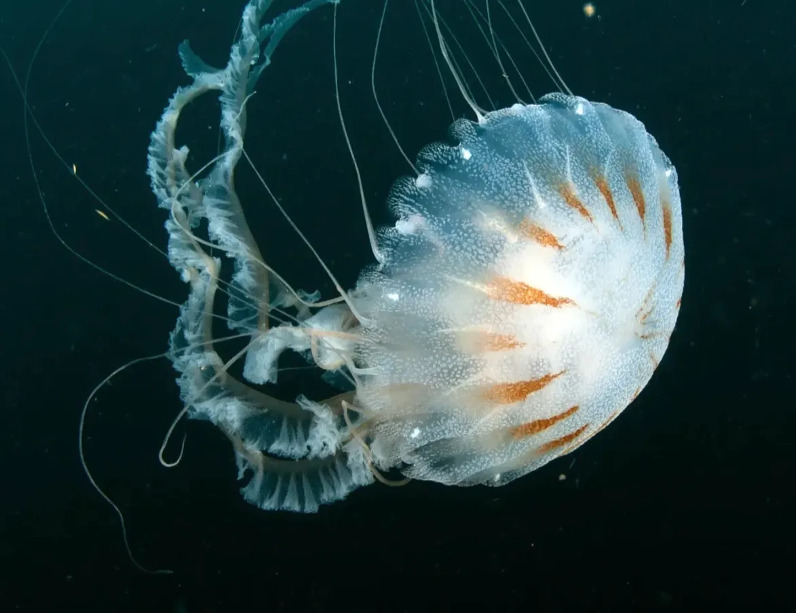
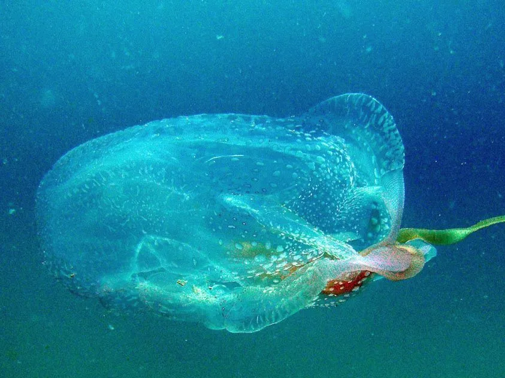
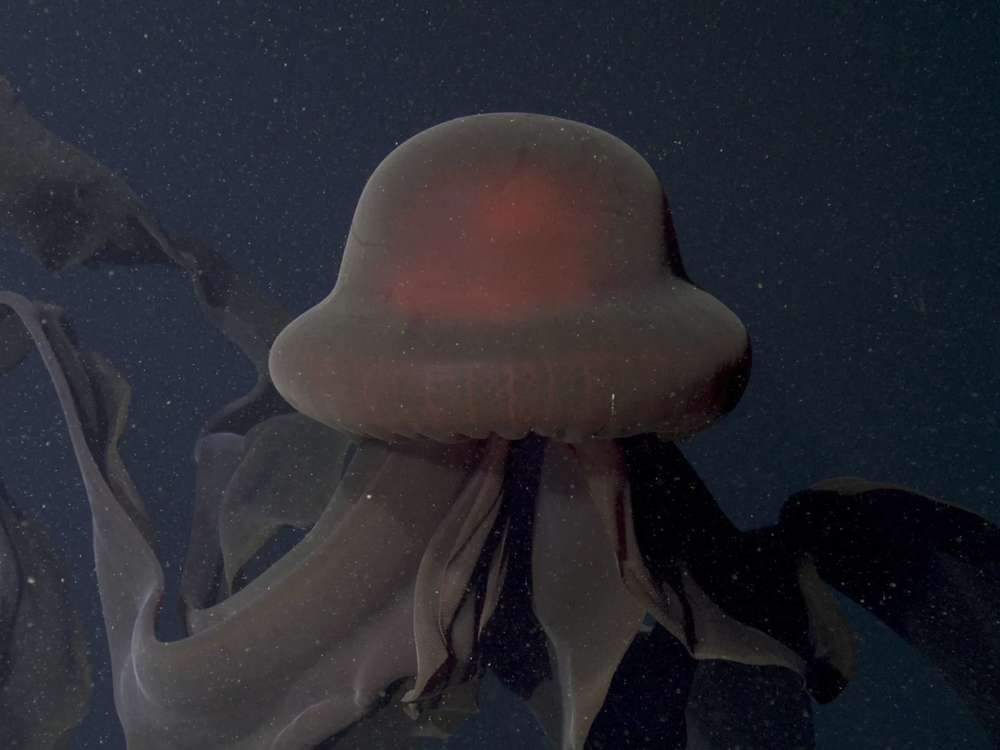
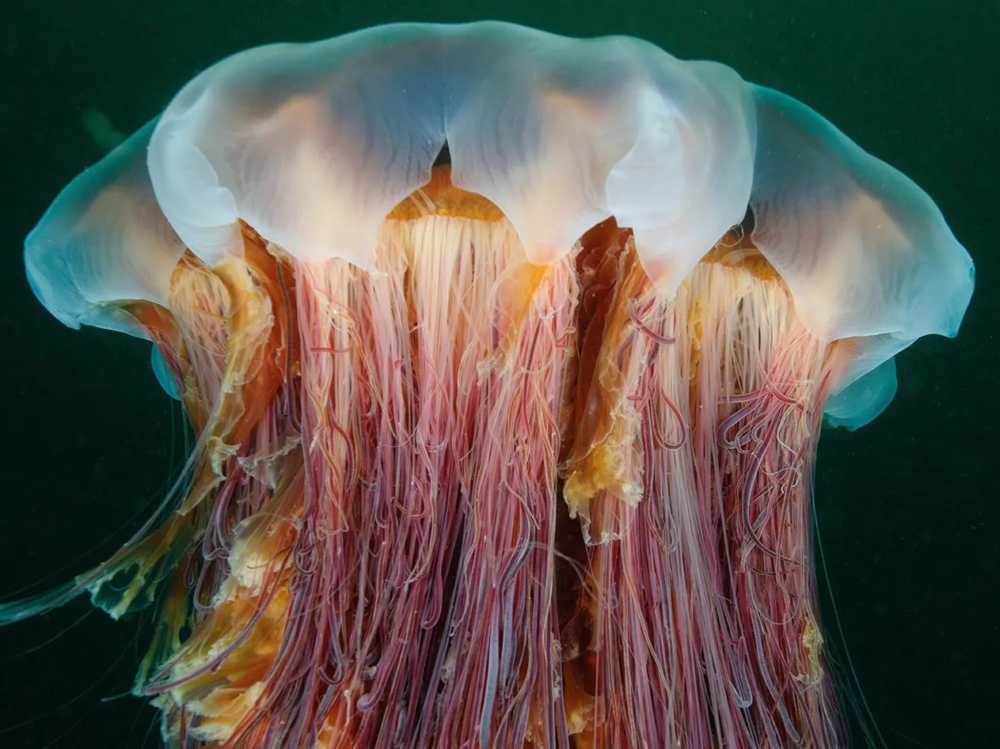

Jellyfish Species
A variety of jellyfish with a list of fun facts about each.

Atlantic Sea Nettle Jellyfish
Chrysaora Quinquecirrha

Box-Within-A-Box Jellyfish
Tamoya Haplonema
- It has a uniquely squared off bell.
- It is one of the most venomous sea creatures, with its sting causing immense pain.
- It has a carnivorous diet, eating small fish.
- Rather than float around, it prefers to actively swim.

Giant Phantom Jellyfish
Stygiomedusa Gigantea

Lion's Mane Jellyfish
Cyanea Capillata
- Its name comes from their whispy tentacles.
- It can grow to be one of the longest animals, up to 36 metres in length.
- It is found in a variety of colours, from red-orange to purple.
- While it are not bioluminescent, it can appear to glow.